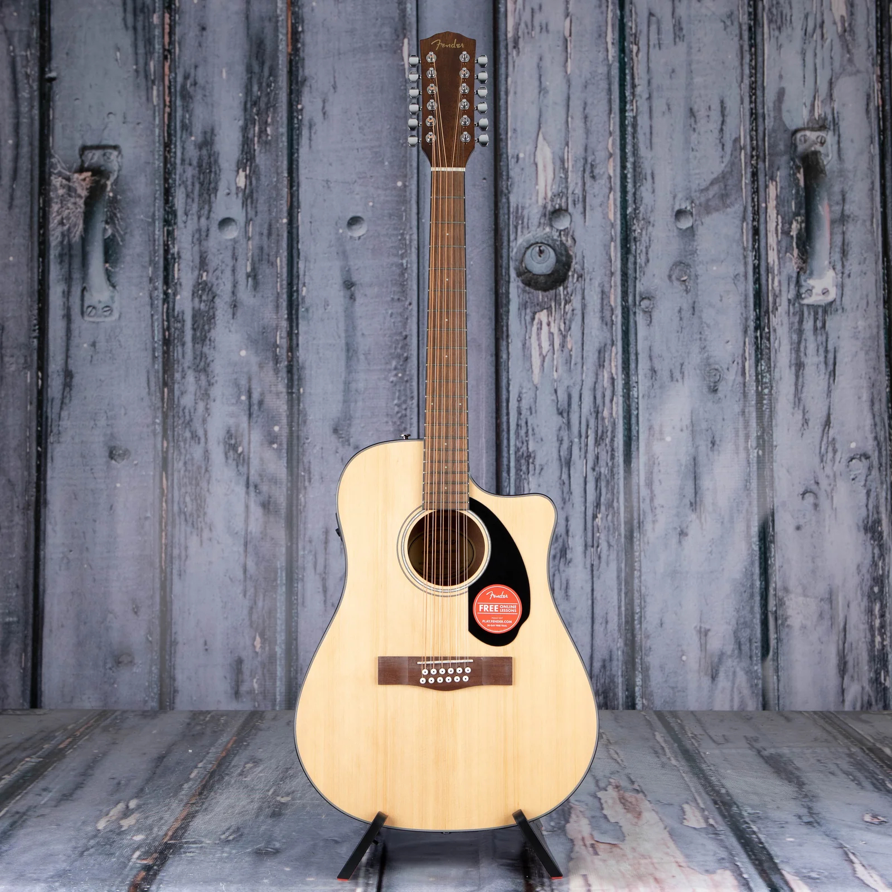

Me gusta tocar guitarra, en general los instrumentos y la musica, pero no eh aprendido mas instrumentos, pronto comprare un teclado ya que siempre es lo que eh querido pero por cosas de la vida comence con la guitarra y me gusto, me quede y como ya sabia decidi centrarme en ese instrumento hasta perfecionarlo.
